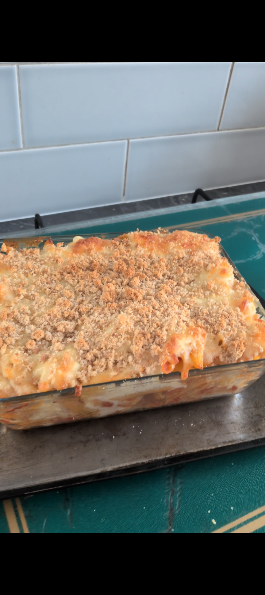

GLUTEN-FREE RECIPE
Two-Cheese Pasta Bake

Ingredients
- 350g Gluten-free pasta
- 400g Tomato sauce
- Cheese sauce
- 100g Mozzarella and cheddar mix, for topping
Method
Cook the gluten-free pasta according to the packet instructions.
While the pasta is cooking, heat the tomato sauce.
Drain the pasta and stir through the tomato sauce.
Transfer the pasta and tomato sauce to an ovenproof dish.Pour the cheese sauce over the top.
Sprinkle over the mozzarella and cheddar mix.
Bake in the oven for around 30 minutes, or until the cheese is golden brown and bubbling.
Freezer friendly: Allow to cool completely, cover well and freeze. Defrost thoroughly before reheating and make sure it’s piping hot throughout before serving.